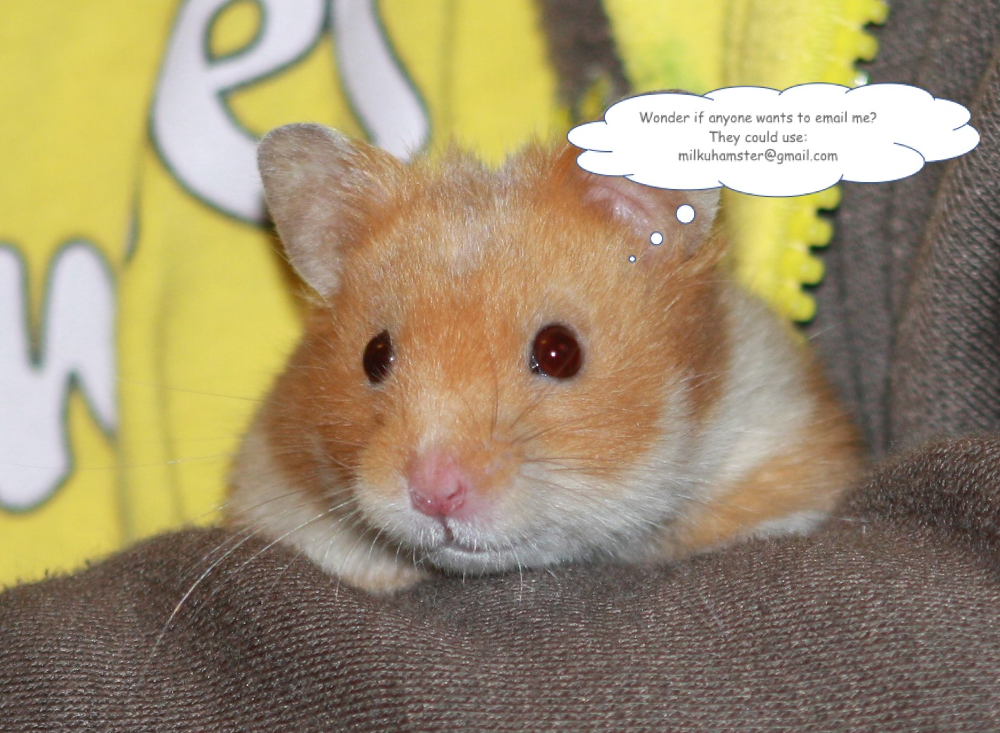

Hamster Haiku
03-May-2017 | Milku
I could be a poet, but don't yet know it.
While I do enjoy dabbling in the sciences, I feel that perhaps I should also dip my paws into the arts. I think that’s what an aspiring hamster should do. After all, I never know when I might encounter HRH Marvin. If you don’t already know him, he’s the hamster in the Duke and Duchess of Cambridge’s household. It was reported that he liked tickling Princess Charlotte with his whiskers. Now that’s not my sort of thing, but I suppose I could put up with it in exchange for living in a royal household. I bet he gets gourmet snacks. But we’ll probably never know as he’s a bit publicity shy. All we’ve got is a twitter feed purporting to be the royal hamster, but which is actually produced by artist and blogger Christine Frazier.

Anyway, back to the arts. I’m not too sure about getting paint on my fur. That’ll be a challenge for my humans to overcome…I want edible paint.
I enjoyed reading some haiku on the internet recently so maybe poetry could become my hobby. Here’s the link to the Hamster Haiku page. My favourite is:
It is the nature
of teeth to challenge the hand.
Stroke me. I won't bite...
Even if I haven’t bitten anyone recently.
